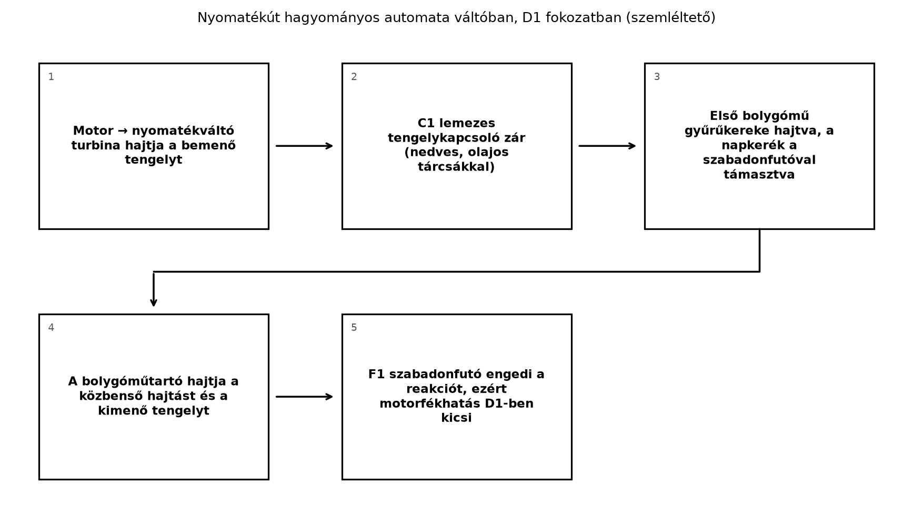

Ügyfélpanaszok, amelyekkel autószerelőként naponta találkozol: „a váltó hidegen rángat”, „pörög a motor, de alig gyorsul”, „beragadt P-ben a kar”, „hibakód nélkül vészüzembe ment a váltó”. A hagyományos automata, a kettős tengelykapcsolós és a fokozatmentes váltó teljesen más felépítésű, ezért más olajat, más ellenőrzési eljárást és más javítási logikát igényel. Ha csak annyit tudsz, hogy „automata váltó”, a hiba keresése zsákutca lesz. Ebben az alfejezetben a három legfontosabb típust hasonlítjuk össze, és bemutatjuk a javításhoz szükséges legalapvetőbb szerkezeti ismereteket.
Képzelj el egy hagyományos, hatfokozatú automata váltó keresztmetszetét. A ház bal oldalán a hidrodinamikus nyomatékváltó látható, mögötte az olajszivattyú. A váltóház közepén a Ravigneaux- vagy Simpson-típusú bolygómű-készlet kapott helyet, körülötte nedves, olajos többtárcsás tengelykapcsolók és fékek, valamint a dobok külső palástján egy szalagfék. A ház alján található a hidraulikus vezérlőegység (szelepblokk) és az elektrohidraulikus mágnesszelepek; felül a választókarhoz kapcsolódó mechanikus reteszelés és a kimenő fordulatszám-jeladó. Ugyanettől az elvtől eltér a kettős tengelykapcsolós váltó, amely fogaskerékpárokat és két tengelykapcsolót használ, illetve a CVT, amely kúptárcsákkal és húzóelemével tűnik fel.

Az ábra a nyomatékút lépéseit mutatja D1-ben. A nyíl mentén haladhatunk: a motor a nyomatékváltó szivattyúkerekét hajtja, az olaj a turbinát forgatja, az olajnyomás zárja a C1 tengelykapcsolót, a bolygómű gyűrűkereke behajtott elem lesz, a napkerék a szabadonfutón támaszkodik, így a bolygóműtartó hajtja tovább a kimenő tengelyt. Az R helyzetet ugyanezzel a módszerrel, de más elemek működtetésével tanuljuk meg.
Definíció. (hagyományos automata váltó) Olyan többfokozatú sebességváltó, amely a fokozatokat bolygóművekkel, nedves lemezes tengelykapcsolókkal, lemezes fékekkel és/vagy szalagfékkel valósítja meg, indítóelemként pedig hidrodinamikus nyomatékváltót használ. A fokozatok kapcsolását hidraulikus vagy elektrohidraulikus vezérlés végzi.
Definíció. (kettős tengelykapcsolós váltó, DSG-típus) Olyan automatizált sebességváltó, amely két részhajtóművet és két tengelykapcsolót tartalmaz: az egyik tengelykapcsoló a páratlan fokozatokat (1., 3., 5.), a másik a páros fokozatokat (2., 4., 6.) hajtja. A következő fokozat előválasztott állapotban vár, így a váltás nagyon gyors és megszakításmentesnek érződik. A „DSG” egy típusnév; általánosan kettős tengelykapcsolós, automatizált kézi váltónak nevezzük.
Definíció. (fokozatmentes váltó, CVT) Olyan sebességváltó, amelynek áttétele egy tartományon belül folyamatosan, fokozatok nélkül változtatható. A leggyakoribb személygépkocsi-változat két, egymással szemben álló kúpos tárcsapárból és egy húzóelemből (szalagból vagy láncból) áll.
Definíció. (ATF-váltóolaj) Az automata sebességváltókhoz való hidraulika- és kenőolajok gyűjtőneve (automatic transmission fluid). Nem helyettesíthető egyszerű motorolajjal, és a CVT-hez, illetve a kettős tengelykapcsolós váltóhoz külön engedélyezett olajtípus kell.
A hagyományos automata váltó legfontosabb egységei:
Az ábra számozása a fenti felsorolást követi. Az alsó részletek a két kapcsolóelem működését mutatják: a lemezkötegben az olajnyomás a dugattyút a váltakozó acél- és súrlódó lemezekre nyomja (zárva a két elem együtt forog, nyitva a visszahúzó rugó oldja), a szalagféknél a munkahenger a dobot körülfogó szalagot feszíti meg, és a dob a házhoz fékeződik. A HTML-változatban rámutatásra a részegység neve és szerepe jelenik meg.
A szokásos helyzetek és feladataik:
A D1 előremeneti fokozatban a motor a nyomatékváltón keresztül hajtja a bemenő tengelyt. A hidraulikus vezérlés zárja a C1 lemezes tengelykapcsolót, amely a bemenő tengelyt a bolygómű gyűrűkerekével köti össze. A napkereket a szabadonfutó (F1) vagy egy lemezes fék a házhoz támasztja. A bolygóműtartó így a gyűrűnél lassabban, de nagyobb nyomatékkal forog, és a kimenő tengelyt hajtja. A szabadonfutó miatt D1-ben motorfékhatás alig van: ha a jármű gyorsabban forog, mint a hajtás, a szabadonfutó kiold, és a hajtás nem fékez.
Az R helyzetben a vezérlés általában egy másik lemezes tengelykapcsolót (C2 vagy C3) és egy lemezes féket vagy szalagféket (B2/B3) működtet. A pontos kapcsolás típusfüggő, de a logika mindig az: a bolygómű egyik eleme behajtott, a másik rögzített, a harmadik kimenet, és a kapcsolat iránya úgy alakul, hogy a kimenő tengely az előremenetthez képest ellenkező irányba forog. A hátramenetet a váltóvezérlő csak kis sebességnél engedi, a védelmi logika ezt figyeli.
A modern automata váltóban a hidraulikus szelepblokk már nem mechanikusan, hanem elektrohidraulikus mágnesszelepekkel épül fel. A TCM szenzorjelekből kiszámítja a kívánt fokozatot, a nyomásmódosítást és a váltási időt. A váltó adaptációt is tanul: a lemezes tengelykapcsolók kopását, a váltási időket és a nyomásigényt korrigálja. Ha a rendszer alapvető hibát észlel, vészüzembe kapcsol: egy vagy néhány rögzített fokozatot tart fenn (típusfüggő), és a hibát műszerfalon jelzi, illetve tárolja. Ilyenkor a probléma kiolvasásához rendszerteszter kell, mert a vészüzem nem a váltó „megjavulásáig” tart, hanem addig, amíg a hibát föl nem derítik.
A kettős tengelykapcsolós váltóban nincs nyomatékváltó és nincs bolygómű. Két, egymás melletti fogaskerékpár-csoport található benne, mint egy kézi váltóban. Az 1., 3., 5. fokozat és a hátramenet az egyik tengelykapcsolóhoz, a 2., 4., 6. fokozat a másikhoz tartozik. Amikor a jármű egyes fokozatban halad, a kettes fokozat már be van kapcsolva, de a hozzá tartozó tengelykapcsoló még nyitva. Váltáskor a vezérlő az egyik tengelykapcsolót zárja, a másikat egyszerre nyitja. Ezért a váltás gyors, a vonóerő-megszakítás rövid.
A tengelykapcsolók lehetnek nedves (olajban futó) vagy száraz kivitelűek; a pontos kivitel gyártótól függ. A váltást egy mechatronikai egység vezérli, amely a hidraulikus munkahengereket, mágnesszelepeket és az elektronikát egyesíti. A DSG-típusú váltó is rendelkezik adaptációval; a kuplungok kopását és az érintkezési pontot újra kell tanultatni bizonyos javítások után. Az automatizált kézi váltó (AMT) a régebbi, egyszerűbb megoldás: hagyományos kézi váltót villamos vagy hidraulikus állítómű működtet, de váltáskor érezhetőbb a vonóerő-megszakadás, és a komfortja szerényebb.
A CVT központi eleme két kúptárcsapár és egy tolóelem (szalag vagy lánc). Mindegyik tárcsapár egyik fele tengelyirányban elmozdulhat, így a húzóelem futósugara kisebb-nagyobb lesz. Ha a motoroldali tárcsa futósugara kicsi, a kerékoldalié nagy, az áttétel lassító; ha a motoroldali futósugár nagy, a kerékoldali kicsi, az áttétel gyorsító. A tárcsák szorítóerejét a váltóvezérlő hidraulikusan szabályozza, hogy a húzóelem ne csússzon meg. A CVT előnye, hogy a motor fordulatszámát közel állandó, optimális üzemi tartományban tarthatja, miközben a jármű gyorsul. A látszólagos „megcsúszás” elkerülését a tárcsanyomás vezérlés és a kopásellenőrzés szolgálja.
Az ábra bal oldalán a CVT áttétele : indításkor a motoroldali futósugár kicsi (), nagy sebességnél nagy (); a 2. példa adataival 1800 1/min mellett a kimenő fordulatszám 766, illetve kb. 4290 1/min. A tolószalag tolóelem, a lánc húzóelem. A jobb oldalon a kettős tengelykapcsolós váltó két részváltója látható: 1. fokozatban K1 zár, a 2. fokozat már előválasztva vár; váltáskor K1 nyit, K2 zár, a két tengelykapcsoló nyomatéka rövid ideig átfed, így a vonóerő nem szakad meg. A HTML-változatban a CVT-áttétel csúszkával állítható, a DSG fázisai menüből választhatók.
| Szempont | Hagyományos automata | Kettős tengelykapcsolós (DSG-típus) | CVT |
|---|---|---|---|
| Indítóelem | nyomatékváltó | száraz vagy nedves tengelykapcsoló | nyomatékváltó vagy tengelykapcsoló |
| Áttételképzés | bolygóművek | fogaskerékpárok két részváltóban | kúptárcsák és tolószalag vagy lánc |
| Váltás | tengelykapcsoló–fék átfedéssel | két tengelykapcsoló átfedéssel | fokozatmentes |
| Komfort | nagyon egyenletes | gyors, szinte megszakításmentes | fokozatmentes, egyenletes |
| Hatásfok (tájékoztató, ellenőrizendő) | a nyomatékváltó vesztesége rontja | jobb | jó, de a tárcsanyomás veszteséget okoz |
| Olaj | ATF | DSG-specifikáció; száraz kivitelnél külön hajtóműolaj és hidraulikaolaj | CVT-olaj |
| Jellemző hibák | váltási csúszás, vészüzem | mechatronika, tengelykapcsoló-adaptáció | szalag/lánc kopása, csúszás |
| Szervizteendő | olajcsere, adaptáció | adaptáció, szoftver | csak gyártói CVT-olaj, kopásellenőrzés |
Az összehasonlító táblázat értékei tanulási példák (ellenőrizendő: gyártói adat).
Továbbvitt eredmény. A hagyományos automata váltó nyomatékváltós, bolygóműves és hidraulikus felépítése, a DSG fogaskerékpáros, kettős tengelykapcsolós rendszere és a CVT folytonos áttétele a hibrid és elektromos hajtásoknál (Hibrid és elektromos hajtások áttekintése) sokszor visszaköszön; az e-CVT és a hibrid hajtásmodul működése ezekből az alapokból érthető meg. Ugyanezt a hármas felosztást használjuk az automata váltók szervizelése, olajcseréje és javítása során (Tengelykapcsoló, nyomatékváltó és automata váltó szerelése, olajcsere), mert minden típusnak eltérő az olajtöltete, a légtelenítése, az adaptációja és a biztonsági ellenőrzése.
1. példa – Bolygómű-áttétel D1 fokozatban. Egy egyszerű tanulási bolygóműben a napkerék fogszáma , a gyűrűkerék fogszáma , így . D1-ben a gyűrűkerék behajtott, a napkerék a szabadonfutóval rögzített, a bolygóműtartó a kimenet. Mekkora a bolygómű fokozati áttétele?
Adott: , , . Keresett: .
Képlet (a Bolygóművek és a hidrodinamikus nyomatékváltó alfejezet táblázatának 3. sora: napkerék rögzített, gyűrűkerék hajt, tartó hajtott): .
Behelyettesítés: .
Ellenőrzés: a tartó lassabban forog, mint a gyűrű, ezért az áttétel nagyobb 1-nél. A teljes váltó teljes első fokozati áttétele a további bolygóművek és a végáttétel miatt ennél nagyobb is lehet (jellemzően 2,5–4 között; gyártói adat – ellenőrizendő). ∎
2. példa – CVT kimenő fordulatszám-számítás. Egy CVT áttételtartománya és . A motor fordulatszáma mindkét helyzetben . Mekkora a váltó kimenő fordulatszáma a két szélső helyzetben?
Adott: , , .
.
.
Ellenőrzés: nagy áttételnél a kimenő fordulatszám kicsi (indulás, lassú haladás), kis áttételnél nagy (nagyobb sebesség). A két érték nagyságrendje reális. ∎
Hibás példa. Ha a CVT-be hagyományos ATF-et töltenek, a szíj vagy lánc a tárcsákon megcsúszhat, mert a CVT-olajnak speciális fém-súrlódást szabályozó adaléka van. A hibát sokan csak később veszik észre, amikor a váltó már állandóan csúszik. Helyes gyakorlat: csak a gyártói engedély szerinti CVT-olajat használni.
Ellenőrzőlista váltóvizsgálathoz:
Figyelem. A kileeresztett váltóolaj forró lehet, és a váltóház alsó lemeze éles peremű. Viselj védőszemüveget, hosszú szárú védőkesztyűt, és az olajat megfelelő gyűjtőedénybe engedd le.
Környezetvédelem. A használt váltóolaj veszélyes hulladék; zárható, felcímkézett edényben kell gyűjteni, és engedéllyel rendelkező hulladékkezelőnek kell átadni. A műhelyben a kiöntött olajat tilos a csatornába engedni.
Eset: DSG-típusú váltó hidegen rángat. Az ügyfél azt panaszolja, hogy az autó hidegen, induláskor rángat, melegen viszont jól viselkedik. A kiolvasás során a váltó vezérlőjében nincs hibakód. Az élő adatok között az akkumulátorfeszültség, a választókar-helyzet és a váltóolaj-hőmérséklet reális értéket mutat. A szerelő megvizsgálja a váltótartó rögzítését, külső csatlakozóit, majd elvégzi a kettős tengelykapcsoló mechatronikai adaptációját és szükség szerint a gyártói szoftverfrissítést. A javítás után hidegen próbaúton ellenőrzi, hogy a váltás ismét lágy, a tengelykapcsoló nem rángat. A hibát az okozta, hogy a kopás és a hőfokfüggő súrlódási jellemzők miatt a kuplung adaptációja eltért az ideálistól; a szoftveres korrekció és az újratanítás megszüntette a panaszt.
1. feladat (A) Határozd meg röviden: hagyományos automata váltó, DSG-típusú váltó, CVT-váltó.
2. feladat (A) Sorold fel a hagyományos automata váltó főbb szerkezeti egységeit.
3. feladat (B) Egy CVT áttétele folyamatosan változik. Adott: a motor fordulatszáma , az aktuális áttétel . Mekkora a váltó kimenő fordulatszáma?
4. feladat (B) Ábrázold szavakkal az R helyzetű nyomatékutat a hagyományos automata váltóban. Mely elemek vehetnek részt a hátramenetben?
5. feladat (C) Hasonlítsd össze a hagyományos automata váltót, a DSG-típusú váltót és a CVT-t a komfort, a hatásfok, a váltás megszakításmentessége és a jellemző hiba szempontjából.
6. feladat (D) Egy DSG-szervizben a jármű néha nem tud elindulni, a motor pörög, de a váltó nem viszi át a nyomatékot. A kiolvasott adatok: hibakód nincs, az olajszint rendben, az akkumulátor feszültsége 12,4 V, a tengelykapcsoló-adaptáció már több éve nem volt frissítve. Mi a legvalószínűbb hipotézis, és milyen első teendőt javasolsz?
A hagyományos automata váltó hidrodinamikus nyomatékváltót, bolygóműveket és nedves lemezes tengelykapcsolókat, fékeket, valamint szalagféket használ. A fokozatok hidraulikus vagy elektrohidraulikus vezérléssel jönnek létre; D1-ben jellemzően a gyűrűkerék hajt, a napkerék a szabadonfutón támaszkodik, a tartó a kimenet. R-ben egy vagy több fék/tengelykapcsoló ellenkező irányú forgást állít elő. A választókarhelyzetek közül a P mechanikus reteszt is tartalmaz, az elektronika vészüzemmel védi a váltót. A kettős tengelykapcsolós váltó fogaskerékpárokat és két tengelykapcsolót alkalmaz; a CVT kúptárcsás, folyamatos áttételű. Mindegyikhez külön gyártói olajspecifikáció és adaptációs eljárás tartozik; ATF, DSG-olaj és CVT-olaj nem keverhető. A hibrid hajtások és a váltószerviz során ezt a három típust kell megkülönböztetni.
A fejezet a klasszikus mechanikai és hajtástechnikai ismeretekre, valamint a gyártói javítási útmutatók és váltószerviz-eljárások általános szerkezeti mintáira épül. Nincs hivatkozott webes forrás. Ellenőrizendő: a konkrét fogaskerékfogszámok, bolygómű-kapcsolások, tengelykapcsoló- és szalagfék-elnevezések, D1/R kapcsolási logikák, váltóolaj-specifikációk, hőmérsékletértékek, adaptációs lépések és vészüzemi tulajdonságok a gyártói adat alapján. A táblázatban szereplő értékek tanulási példák.